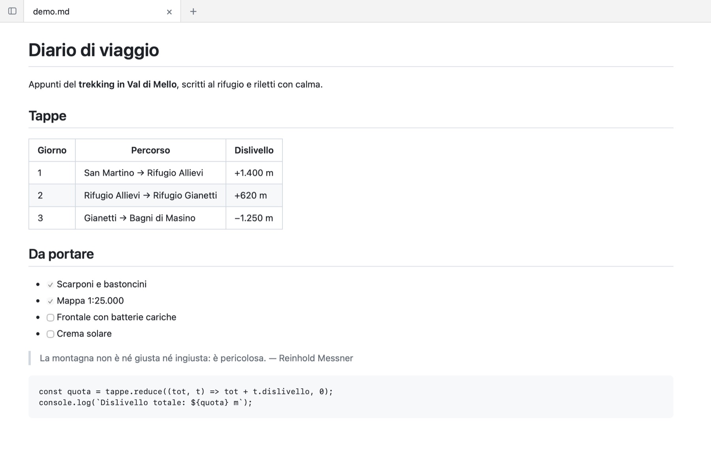
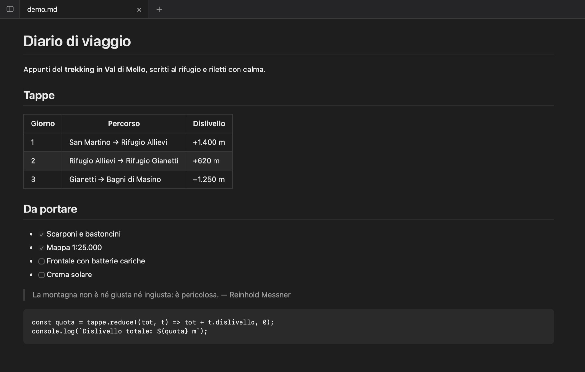

Strumento per Mac · Gratis
MD Viewer
I tuoi file Markdown, belli come su GitHub.
Un lettore di Markdown per Mac: schede, cartelle a portata di mano, aggiornamento in tempo reale mentre scrivi in un altro editor.
Stai visitando da un sistema diverso dal Mac: la versione per Windows è in arrivo.


Cosa fa
Pensato per l’uso di tutti i giorni.
Resa in stile GitHub
Tabelle, liste di cose da fare, blocchi di codice, citazioni, HTML in linea. Gli indici scritti per GitHub funzionano anche qui.
Si aggiorna da solo
Salvi il file nel tuo editor e la pagina cambia sotto i tuoi occhi, senza perdere il punto in cui stavi leggendo.
Schede e cartelle
Più documenti aperti insieme e un pannello delle cartelle in stile VS Code che mostra solo quello che conta: i tuoi .md.
Riordina trascinando
Con la modalità modifica sposti voci, sezioni e blocchi con il mouse. Nel file cambiano solo le righe toccate.
Riprende da dove eri
Riaprendo l’app ritrovi schede, punto di lettura, cartelle e zoom esattamente come li avevi lasciati.
Rispettoso
Non diventa l’app predefinita dei .md e non tocca l’anteprima del Finder. Lavora offline, nessun dato esce dal tuo Mac.
Provalo qui
Scrivi a sinistra, leggi a destra.
Così si comporta MD Viewer quando salvi il file nel tuo editor: la pagina si aggiorna mentre scrivi.
Dalla tastiera
Le mani restano sui tasti.
- ⌘OApri file
- ⌘TNuova scheda
- ⌘BPannello cartelle
- ⌘EModalità modifica
- ⌘PStampa o PDF
- ⌘+ ⌘−Zoom
Installazione
Un minuto, una volta sola.
Scarica e apri
Apri il file
.dmgscaricato e trascina MD Viewer nella cartella Applicazioni.Primo avvio
Avvia l’app. macOS avvisa che non può verificarne lo sviluppatore: è normale per il software distribuito fuori dall’App Store senza certificato Apple. Chiudi l’avviso.
Apri comunque
Vai in Impostazioni di Sistema → Privacy e sicurezza, scorri in fondo e premi Apri comunque accanto a MD Viewer. Da qui in poi si apre come qualsiasi altra app.
Dalla stessa bottega